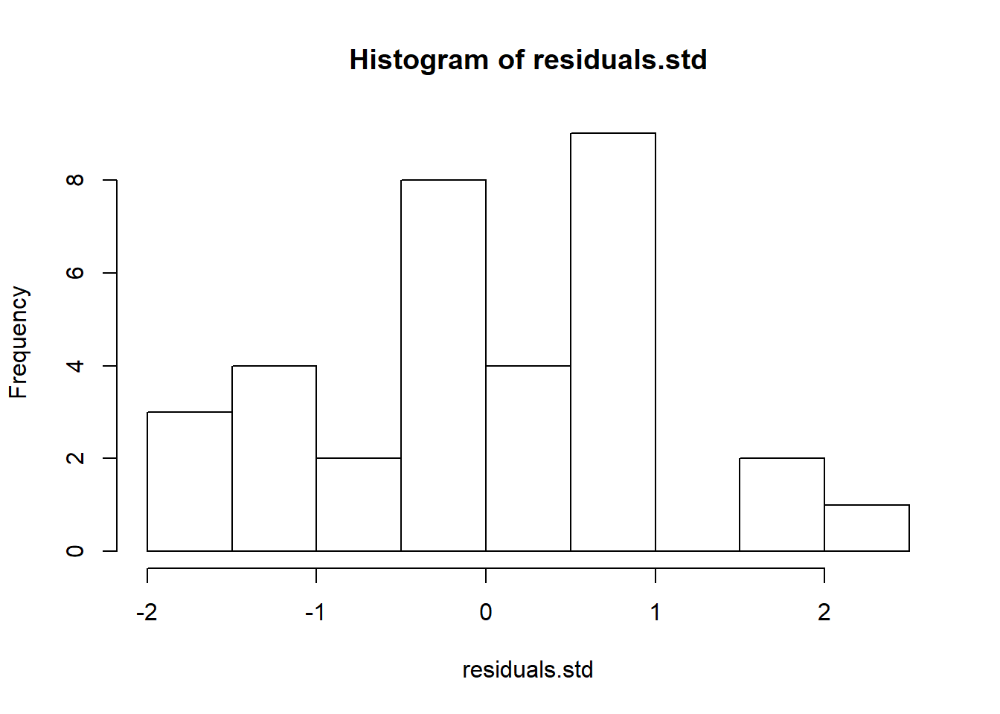

Chapter 2 One-way ANOVA
2.1 Simple randomized experiments
- Motivation and real world applications of randomized experiments.
- Sampling schemes of a simple randomized experiment.
- Question of interest, null hypotheses, and their causal interpretation.
- Intuition of hypothesis testing.
- Practical concerns in the design of experiments.
2.2 One-way ANOVA
2.2.1 A motivating example: the Spock trial
In 1968 Dr. Benjamin Spock was tried in Boston for conspiring against the government for helping young men to escape the military draft. He was convicted by the Boston federal court, but the judgement was overturned by the Court of Appeals in 1969 for many reasons, one of which was cited as the bias of the presiding judge Francis Ford. Dr. Spock, a pediatrician, was very famous for his books on rearing of children, and thus was widely admired by women. As a matter of fact, the jury in Spock trial has no women. Note that jury panels, though randomly selected, should reflect the demographics. In any particular trial, there may not be any woman on the jury, but it is worthwhile to examine if the jury panels of Judge Ford had fewer women than other judges in Boston in few months before the trial. Data are available for jury panels for 7, but we investigate the data for only 4 judges including Judge Ford.
Spock <- read.csv(file="./data/SpockTrial.csv", header=TRUE, sep=",")
Spock$Judge<-as.factor(Spock$Judge);
# Box plot with jittered points (from stackoverflow: https://stackoverflow.com/questions/23675735/how-to-add-boxplots-to-scatterplot-with-jitter)
boxplot(perc.women~Judge,data=Spock)
stripchart(perc.women~Judge, vertical = TRUE, data = Spock,
method = "jitter", add = TRUE, pch = 20, col = 'blue')Figure 2.1: Box plot with jittered data points for the Spock trial data.
2.2.2 ANOVA model
- Cell means model
- Estimators of the means
- Decomposition of sum of squares
- Some basic properties
In the Spock trial data, we can use aov() to fit a one-way ANOVA model.
anova.fit<- aov(perc.women~Judge,data=Spock)
summary(anova.fit)## Df Sum Sq Mean Sq F value Pr(>F)
## Judge 3 1591 530 17.6 1.1e-06 ***
## Residuals 29 874 30
## ---
## Signif. codes: 0 '***' 0.001 '**' 0.01 '*' 0.05 '.' 0.1 ' ' 1We can obtain the following.
- \(n_1=\) 9, \(n_2=\) 6, \(n_3=\) 9, \(n_4=\) 9, and \(n_T=n_1+n_2+n_3+n_4=\) 33.
- \(\bar{Y}_{1,\cdot}=\) 14.62, \(\bar{Y}_{2,\cdot}=\) 33.62, \(\bar{Y}_{3,\cdot}=\) 29.1, and \(\bar{Y}_{4,\cdot}=\) 26.8.
- \(SSE=\) 873.52, \(df=\) 29, and \(MSE=\) 30.12.
- \(SSTO=\) 2464.8, \(df=\) 32.
- \(SSTR=\) 1591.28, \(df=\) 3, and \(MSTR=\) 530.43.
2.2.3 Statistical inference
- Null hypothesis
- The F-test
- Testing a linear combination
- Estimation
- Hypothesis testing
- (Simultaneous) confidence intervals
To test the null hypothesis \(H_0: \mu_1=\mu_2=\mu_3=\mu_4\) against the alternative \(H_1:\) not all \(\mu_i\)’s are equal. We can calculate the F-statistics \(F^*=\frac{MSTR}{MSE}=\) , \(F(0.95;3,29)=\) 2.93. We can thus reject the null hypothesis at the chosen significance level \(0.05\).
Consider the quantity \(L=\mu_1-(\mu_2+\mu_3+\mu4)/3\). We can calculate that \(\hat{L}=\) -15.22, and \(s^2(\hat{L})=\) 4.65. Moreover, since \(t(1-0.01/2;n_T-r)=\) 2.76 a \(99\%\) confidence interval for \(L\) is (-21.16, -9.27).
To test the hypothesis \(H_0: L=0\) against \(H_1: L \neq 0\). We can calculate the t-statistics \(t^*=\hat{L}/s(\hat{L})=\) -7.06. We can calculate the quantile of the t-distribution as before to finish the test.
Next we demonstrate how to contruct the simultaneous confidence intervals for all pairwise difference. The code will construct confidence intervals for two pairs, but leave you to finish the rest.
# Create vectors for the first two linear combinations
comb.mat<-matrix(0,nrow=2,ncol=4)
comb.mat[1,]=c(1,-1,0,0);comb.mat[2,]=c(1,0,-1,0);
# Obtain the estimates
diff = numeric(dim(comb.mat)[1]);
diff.sd=diff;
mean.tmp=anova.fit$coefficients;mean.tmp[1]=0;
ns=as.numeric(table(Spock$Judge));
for(i in 1:length(diff)){
diff[i]=sum(comb.mat[i,]*mean.tmp);
diff.sd[i]=sqrt(sum(comb.mat[i,]^2*ns));
}
alpha=0.05;
# Bonferroni correction:
m=6; # for all pairwise differences, although we only show two here
B.stat=qt(1-alpha/(2*m),anova.fit$df.residual);
# Tukey-Kramer
T.stat=qtukey(1-alpha, nmeans=length(anova.fit$coefficients), df=anova.fit$df.residual)/sqrt(2);
# Scheffe
S.stat=sqrt( (length(anova.fit$coefficients)-1)*qf(1-alpha,length(anova.fit$coefficients)-1,anova.fit$df.residual))
table.stats=matrix(0,1,3);
table.stats[1,]=c(B.stat,T.stat,S.stat);
colnames(table.stats)=c('Bonferroni', 'Tukey', 'Scheffe')
table.stats## Bonferroni Tukey Scheffe
## [1,] 2.8 2.7 3# Then, we can construct the confidence intervals as, e.g.,
CI.bonferroni =matrix(0,nrow=2,ncol=2);
for(i in 1:length(diff)){
CI.bonferroni[i,]=diff[i]+c(1,-1)*B.stat*diff.sd[i];
}2.2.4 Alternative forms of the ANOVA model
- Factor-effect model
- Regression model
The default of ANOVA in R set weights proportional to the sample size in each cell. You can supply the weights to the aov() function to force equal weights.
# Weights proportional to sample sizes
print(model.tables(anova.fit,"effects"))## Tables of effects
##
## Judge
## 1 2 3 4
## -10.72 8.271 3.755 1.455
## rep 9.00 6.000 9.000 9.0002.3 Model diagnostics
- Possible departures
- Diagnostics with residuals
- Graphical methods
- Formal tests
- Hartley test
- Bartlett test
- Levene test
- Remedial measures
- Weighted least squares
- Nonparametric tests based on ranks: rank test, Kruskal-Wallis test
- Box-Cox transformation
All diagnostics start with the residuals.
# Obtain the residuals from the ANOVA fit
residuals=anova.fit$residuals;
hist(residuals)# Semistudentized residuals
residuals.semistd=anova.fit$residuals/sqrt(mse);
hist(residuals.semistd)# Studentized residuals
weights=1-1/ns[as.numeric(Spock$Judge)];
residuals.std=anova.fit$residuals/sqrt(mse)/sqrt(weights);
hist(residuals.std)
# Plot the residuals (or the other two versions) against fitted values
plot(residuals~anova.fit$fitted.values,type='p',pch=16,cex=1.5,xlab="Fitted values",ylab="Residuals")# Plot the residual against certain orders
# No clear orders make sense in the Spock trial data
# Stem-leaf plot (or use histogram, or qq-plot )
stem(residuals)##
## The decimal point is at the |
##
## -10 | 3
## -8 | 21
## -6 | 61
## -4 | 977
## -2 | 3
## -0 | 66630941
## 0 | 4649
## 2 | 78014
## 4 | 0771
## 6 |
## 8 | 54
## 10 |
## 12 | 0qqnorm(residuals);qqline(residuals)# Plot residuals against missing variables
# Not applicable on Spock trial data We now turn to formal tests of the equality of variances.
# Calculate the variances for each group:
(vars = tapply(Spock$perc.women,Spock$Judge,var))## 1 2 3 4
## 25 43 21 36alpha=0.05;
# Hartley test:
H.stat=max(vars)/min(vars);
library(SuppDists) # The distribution is in this package
# Both df and k only take integers:
qmaxFratio(1-alpha,df=floor(sum(ns)/length(ns)-1),k=length(ns))## [1] 8.4qmaxFratio(1-alpha,df=ceiling(sum(ns)/length(ns)-1),k=length(ns))## [1] 7.2# Bartlett test:
K.stat= (sum(ns)-length(ns))*log(mse)-sum( (ns-1)*log(vars) );
qchisq(1-alpha,df=length(ns)-1)## [1] 7.8# Levene test:
Spock$res.abs=abs(anova.fit$residuals);
summary(aov(res.abs~Judge,data=Spock))## Df Sum Sq Mean Sq F value Pr(>F)
## Judge 3 5.6 1.88 0.17 0.91
## Residuals 29 314.7 10.85We leave weighted least squares for exercise. You can either calculate it following the steps discussed in lecture, or use the weights option in lm() and aov().
We can conduct the nonparametric tests as follows.
# The rank test
Spock$rank.perc=rank(Spock$perc.women)
summary(aov(rank.perc~Judge,data=Spock))## Df Sum Sq Mean Sq F value Pr(>F)
## Judge 3 1846 615 15.6 3.1e-06 ***
## Residuals 29 1144 39
## ---
## Signif. codes: 0 '***' 0.001 '**' 0.01 '*' 0.05 '.' 0.1 ' ' 1# Krusal-Wallis test:
kruskal.test(perc.women~Judge,data=Spock)##
## Kruskal-Wallis rank sum test
##
## data: perc.women by Judge
## Kruskal-Wallis chi-squared = 20, df = 3, p-value = 2e-04For Box-Cox transformation, use the boxcox in library MASS.
2.4 Learning Objectives
- Students are able to write down a one-way ANOVA model given a new dataset.
- Students understand the basic properties of one-way ANOVA models.
- Students recognize the assumptions associated with each method.
- Students can implement the aforemened tasks in
R. - Students are comfortable reading
Rhelpfiles related to one-way ANOVA.